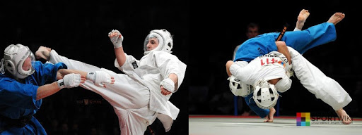

Кудо - современное полноконтактное боевое единоборство, созданное в 1981 году мастером восточных единоборств Адзумой Такаси на основе его знаний о карате кёкусинкай, борьбе дзюдо, тайском боксе.

История возникновения кудо.
Адзума Такаши, как лучший ученик, перерос своего учителя, основателя киокушинкая (стиль карате), Масутацу Ояму. Каратист по прозвищу Танк, философ по стилю жизни, Такаши разработал личный универсальный стиль контактного боя, который вначале получил название Дайдо Дзюку Карате До. Его частная школа великого пути (так звучит перевод) очень скоро стала необычайно популярной в Японии, а затем и за ее пределами. Ежегодно проходили соревнования, в которых становилось все больше победителей из разных стран мира. 1991 год знаменателен для российских спортсменов кудо. Владивостокчанин Юрий Пирогов стал участником турнира Хокутоки-91, на котором Такаши установил первый личный мировой рекорд. Состоял он в том, что Адзума кряду разбил десять пятнадцатисантиметровых ледяных блоков. Через два года сэнсей провел свой уникальный семинар во Владивостоке, что стало первым шагом на пути распространения нового стиля единоборств по России и бывшим союзным республикам. Затем кудо стали осваивать в Америке, Бразилии, Австралии, Индии, Иране, Чили.
Экипировка кудо.
Техника кудо.
Кудо отличается от карате. Главное различие в том, что движения в ходе поединка не формализируются, им не задаётся определённая последовательность (ката), вместо этого отрабатываются удары, броски и их комбинации с партнёром, в основном применяя лапы и макивара. Нужно отдать должное Адзума Такаси, отобравшему из техник единоборств, самые эффективные приёмы и удары, которые могут повергнуть соперника в течение нескольких секунд. Это смешение стилей легко угадывается: техника ударов руками позаимствована из бокса, удары коленом и локтем – из тайского бокса, удушающие приёмы и броски – из дзюдо и самбо, а ударная техника ногами – из карате кекушинкай. Ещё одним новшеством кудо стало то, что соревноваться в данном виде можно представителям прочих единоборств, но при условии, что они имеет подготовку в соответствии с правилами кудо.